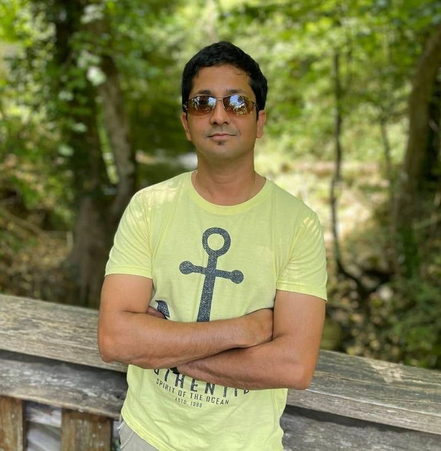
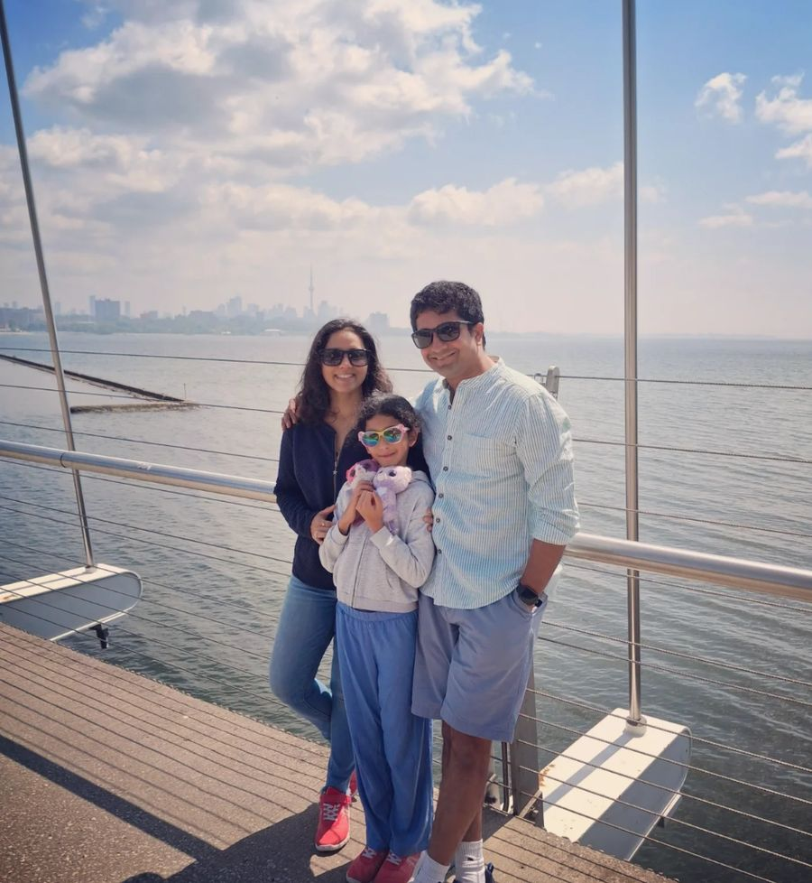
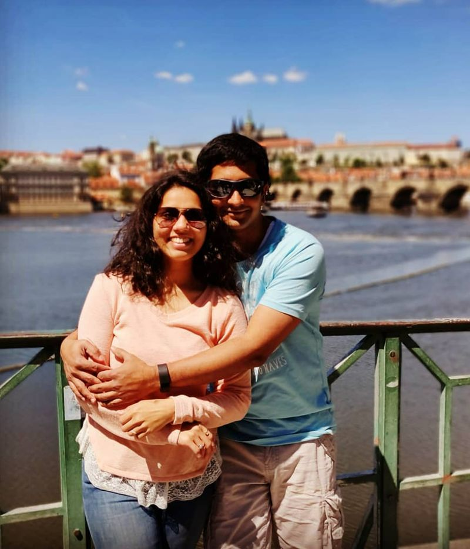
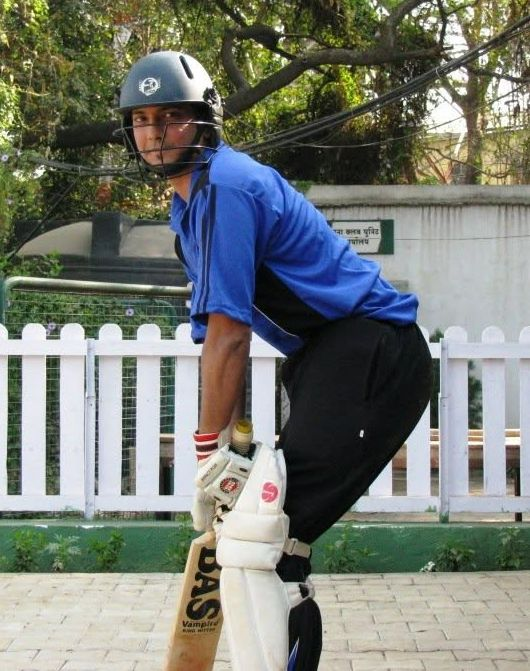
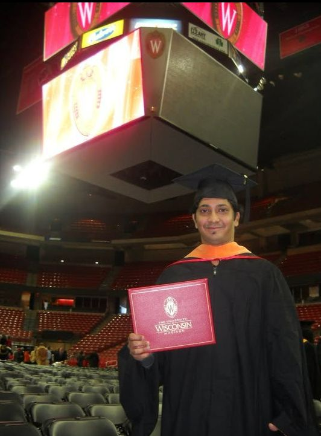

THE PERSON BEHIND THE PROJECTS
A little about me
Husband and dad first. Then cricketer, coach and performance analyst — and a software engineer who likes turning ideas into working things.
I'm Abhijit Deshpande and I live in Germany. I tend to learn by building: a question or a recurring annoyance often becomes a small tool, a prototype or an experiment. This page is about the person behind them.

FAMILY
Husband and dad, before everything
Everything else on this site comes after my family. My wife Nihira is a singer and composer; her music is the reason nihiramusic.in exists, and building it is one of the things I'm proudest of. Together we are raising our daughter, and my side projects fit around family life rather than the other way round.


CRICKET
Player, coach, analyst
Cricket is the other constant. I'm an ICC-certified Level 1 coach and an amateur performance analyst, and I have worked as an analyst with the German and the Luxembourg national teams.
Closer to home, I set up a local club and ran it as it climbed to Bundesliga level, and I have served on the board and committees of my regional cricket association. CricketIQ is where cricket and software meet.

ENGINEERING
A career built on curves
I hold a master's degree in mechanical engineering from the University of Wisconsin–Madison (2010), with a focus on computational geometry. Geometry has stayed at the centre of my work: I write CAD software for a living.
Outside work I build with Python, the web and AI-assisted development. My professional history is on LinkedIn (opens in a new tab); this site is about what I make and learn in my own time.

AWAY FROM THE SCREEN
Running, music and writing
I run, music is never far away in our house, and I write — short notes here, longer essays on Substack. I speak English, Marathi, Hindi and German.
Areas I keep coming back to
- Family
- Cricket coaching & analysis
- Geometry & CAD software
- AI-assisted engineering
- Python & practical automation
- Running
- Music
- Writing
Elsewhere on the internet
Get in touch
The best way to reach me is a message on LinkedIn (opens in a new tab).
This is an independent personal site. Views and experiments here are my own and do not represent my employer.